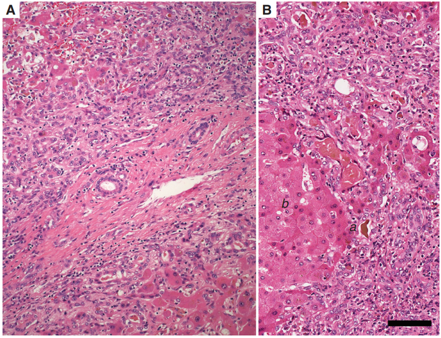
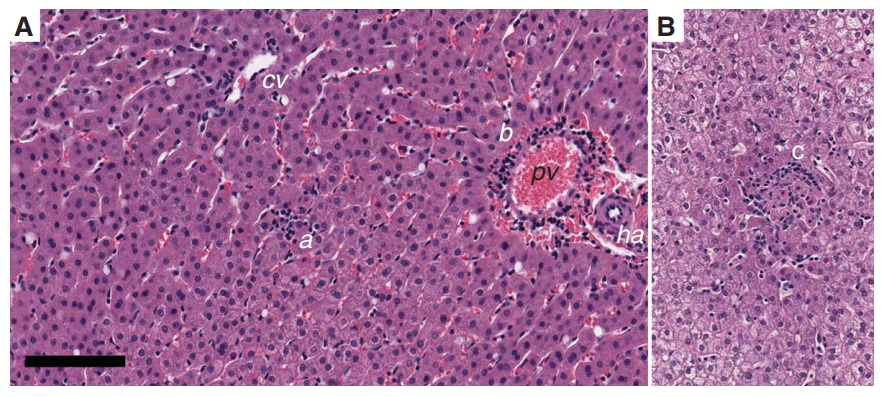
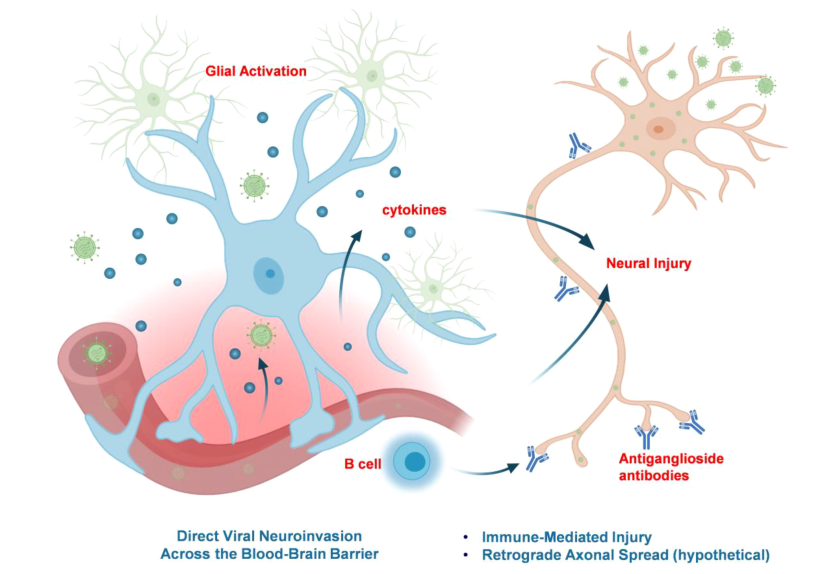

SINH LÝ BỆNH & CƠ CHẾ BỆNH SINH VIÊM GAN SIÊU VI E
Hepatitis E Virus (HEV) Pathophysiology & Pathogenesis — Phân tích phân tử cấu trúc bộ gen 3 ORFs, hạt quasi-enveloped, phân loại One Health 8 genotypes, cơ chế miễn dịch bùng phát gây suy gan cấp ở phụ nữ mang thai, tiến triển xơ gan mạn tính ở người ghép tạng, và 2 trục bệnh sinh thần kinh học (hội chứng Guillain-Barré & Neuralgic Amyotrophy).
Viêm gan siêu vi E (Hepatitis E Virus - HEV) là tác nhân lây nhiễm lây qua đường tiêu hóa và truyền dọc từ động vật (Zoonosis) có quy mô toàn cầu. Với sự tồn tại dưới hai trạng thái vật lý độc đáo (hạt trần trong phân vs hạt quasi-enveloped trong máu), HEV không chỉ gây viêm gan cấp tự giới hạn mà còn gây ra tỷ lệ tử vong thảm khốc lên tới 25 - 30% ở phụ nữ mang thai tam cá nguyệt thứ ba, thiết lập nhiễm trùng mạn tính tiến triển thành xơ gan ở người suy giảm miễn dịch (HEV-3), và sở hữu ái tính thần kinh (Neurotropism) gây ra các hội chứng thần kinh nghiêm trọng.
Phần I: Đặc Điểm Vi Rút Học & Phân Loại "Một Sức Khỏe" (Genomics & One Health)
Vi rút viêm gan E (HEV) thuộc họ Hepeviridae, phân họ Orthohepevirinae, chi Paslahepevirus (loài Paslahepevirus balayani). Bộ gen của HEV là một phân tử RNA sợi đơn bản dương ((+)ssRNA) dài khoảng 7.2 kb, có mũ cap ở đầu 5' và đuôi poly(A) ở đầu 3'.
1. Ba Khung Đọc Mở (ORFs) Gối Chồng Lên Nhau
Khung đọc lớn nhất (5.1 kb), mã hóa polyprotein chứa các miền chức năng: Methyltransferase (tạo mũ cap 5'), Papain-like Cysteine Protease, Helicase, và RNA-dependent RNA Polymerase (RdRP) đảm nhiệm sao chép virus.
Mã hóa protein capsid 660 axit amin. Ngoài việc lắp ráp virion, tế bào gan nhiễm HEV còn tiết ồ ạt protein ORF2 tự do không chứa RNA (genome-free ORF2) vào máu đóng vai trò như một mồi nhử miễn dịch và tạo phức hợp miễn dịch lưu hành.
Khung đọc nhỏ nhất (113-114 axit amin), mã hóa phosphoprotein liên kết màng nội bào, tương tác với phức hợp ESCRT (Tsg101) để bọc vỏ màng lipid giả và giải phóng hạt quasi-enveloped vào tuần hoàn máu.
2. Bảng Phân Loại 8 Kiểu Gen & Mối Liên Hệ "Một Sức Khỏe" (One Health)
| Phân nhóm Genotype | Ổ Chứa Tự Nhiên | Phương Thức Lây Truyền | Đặc Điểm Lâm Sàng & Phân Bố Địa Lý |
|---|---|---|---|
| HEV-1 & HEV-2 | Chỉ ở Người (Human-restricted) | Đường Nước (Waterborne) — Phân - Miệng do nguồn nước ô nhiễm | Gây các vụ dịch lớn ở các nước đang phát triển (Châu Á, Châu Phi, Mexico). Tỷ lệ tử vong cực cao (20-30%) ở sản phụ. Không gây bệnh mạn tính. |
| HEV-3 & HEV-4 | Động vật (Zoonotic): Lợn nhà, lợn rừng, hươu nai | Thực Phẩm (Foodborne) — Ăn thịt, nội tạng lợn/hươu sống hoặc chưa nấu chín | Ca bệnh tản phát ở các nước phát triển (Âu, Mỹ, Nhật). Có khả năng gây viêm gan mạn tính và xơ gan ở người suy giảm miễn dịch. |
| HEV-7 & HEV-8 | Lạc đà (Dromedary camels) | Ăn thịt lạc đà hoặc uống sữa lạc đà chưa tiệt trùng | Đã xác nhận ca bệnh viêm gan mạn tính ở người ghép tạng tại Trung Đông. |
| Rocahepevirus ratti (HEV-C1) | Chuột cống (Rats) | Tiếp xúc phân chuột hoặc môi trường ô nhiễm | Tác nhân mới nổi gây viêm gan cấp nặng và viêm màng não tử vong ở người suy giảm miễn dịch. |
Phần II: Chu Kỳ Nhân Lên & Động Học Bài Tiết Vi Rút
- Thời gian ủ bệnh: Kéo dài từ 15 đến 75 ngày (trung bình 36 ngày).
- Động học nhiễm vi rút: Sự bài tiết virus ra phân (fecal shedding) và tình trạng nhiễm virus huyết (viremia) đạt đỉnh đồng thời vào cuối thời kỳ ủ bệnh, ngay trước khi có biểu hiện tăng men gan và triệu chứng lâm sàng.
- Bản chất Non-cytopathic: HEV không trực tiếp làm vỡ màng tế bào gan. Hoại tử nhu mô gan và tăng ALT/AST là hệ quả của phản ứng miễn dịch qua trung gian tế bào T CD8+ (CTLs) và tế bào NK tấn công tiêu diệt các tế bào gan nhiễm virus.
Phần III: Đặc Điểm Mô Bệnh Học Gan Cấp & Mạn Tính (Histopathology)
Thoái hóa sưng phồng (Ballooning degeneration): Tế bào gan trương to, bào tương sáng rỗng; xuất hiện các thể apoptotic ưa acid.
Thâm nhiễm Bạch cầu Trung tính (Neutrophilic Infiltration): Khác với viêm gan A/B/C vốn chỉ thâm nhiễm lympho bào, tiêu bản gan nhiễm HEV thể hiện sự thâm nhiễm phong phú của bạch cầu đa nhân trung tính trong các ổ hoại tử nhu mô và khoảng cửa.
Ứ mật & Dạng tuyến giả (Cholestasis & Pseudoglands): Xuất hiện nút mật đặc (bile plugs) vi quản trung tâm tiểu thùy; các tế bào gan sắp xếp thành cấu trúc dạng tuyến giả (pseudoglandular arrangement).
Phản ứng ống mật (Ductular Reaction): Trong thể hoại tử diện rộng (massive necrosis), xảy ra sự tăng sinh ồ ạt của các ống mật nhỏ quanh khoảng cửa lót bởi tế bào biểu mô ưa kiềm nhạt nhằm nỗ lực tái tạo nhu mô gan.
Viêm gan mạn tính & Xơ gan (HEV-3 ở người suy giảm miễn dịch): Ở bệnh nhân ghép tạng (thận, gan, tim), người nhiễm HIV có CD4 thấp hoặc ung thư máu, HEV-3 không bị đào thải mà chuyển sang giai đoạn mạn tính (> 6 tháng). Quá trình viêm hoại tử mảnh kéo dài dẫn đến xơ gan mất bù nhanh chóng chỉ sau 2 - 3 năm.


Phần IV: Cơ Chế Bệnh Sinh Suy Gan Cấp & Tử Vong Cao Ở Phụ Nữ Mang Thai
Nhiễm HEV Genotype 1 trong thai kỳ (đặc biệt tam cá nguyệt thứ 3) là nguyên nhân gây suy gan cấp tối cấp (Fulminant Hepatic Failure - FHF) với tỷ lệ tử vong thảm khốc từ 15% đến 25% (thậm chí 31.1%).
- Bão miễn dịch hủy tế bào (Hyper-reactive Immune Response): Để bảo vệ thai nhi, cơ thể người mẹ chuyển sang trạng thái dung nạp Th2, làm mất khả năng kiểm soát virus ở giai đoạn đầu, khiến HEV nhân lên hàng tỷ bản sao trong tế bào gan. Khi hệ miễn dịch bùng phát phản ứng muộn, số lượng lớn tế bào CD8+ T và cytokine tiền viêm (TNF-α, IFN-γ, IL-6) được phóng thích đồng loạt, gây hoại tử toàn bộ nhu mô gan (Massive Hepatic Necrosis), bệnh não gan và đông máu rải rác trong lòng mạch (DIC).
- Tổn thương hàng rào bánh nhau: Nồng độ virus cực cao phá hủy trực tiếp các tế bào nuôi bánh nhau (syncytiotrophoblasts), dẫn đến suy giảm chức năng nhau thai, gây băng huyết sau sinh, sẩy thai, sinh non và thai chết lưu.
- Lây truyền dọc từ mẹ sang con (50 - 100%): Trẻ sơ sinh sinh ra từ mẹ nhiễm HEV-RNA dương tính có nguy cơ lây nhiễm dọc gần như tuyệt đối, thường tử vong trong vòng 48 giờ sau sinh do suy gan cấp, hạ thân nhiệt và hạ đường huyết nặng.
Phần V: Sinh Lý Bệnh Hướng Thần Kinh & Biểu Hiện Ngoài Gan (Neuropathogenesis)
Biến chứng ngoài gan phổ biến nhất của HEV là tổn thương hệ thần kinh (chiếm 5% đến 30% bệnh nhân), thường xuất hiện ở những bệnh nhân không có vàng da (anicteric) và men gan chỉ tăng nhẹ hoặc bình thường.
Phá hủy hàng rào máu não (BBB): HEV ức chế mạnh mẽ biểu hiện của các protein liên kết chặt then chốt là ZO-1, Occludin và Claudin-5 trên tế bào nội mạc vi mạch não, tạo điều kiện cho virion vượt qua BBB vào dịch não tủy.
Ái tính tế bào thần kinh (Neurotropism): Virus xâm nhập và sao chép trực tiếp trong neuron giải phóng dopamine và glutamate, kích hoạt tế bào vi thần kinh đệm (Microglia) gây viêm não, viêm màng não, viêm tủy cắt ngang (ATM).
Bắt chước phân tử (Molecular Mimicry): Phản ứng miễn dịch tạo ra các tự kháng thể kháng Ganglioside (anti-GM1, anti-GM2) tấn công trực tiếp vào bao myelin của dây thần kinh ngoại biên, gây Hội chứng Guillain-Barré (GBS) và Teo cơ đau dây thần kinh (Neuralgic Amyotrophy - NA).
Lắng đọng phức hợp miễn dịch ORF2: Lượng lớn protein ORF2 capsid tự do trong máu tạo phức hợp miễn dịch lắng đọng gây viêm cầu thận màng (Glomerulonephritis) và xuất huyết giảm tiểu cầu huyết khối (TTP).

Phần VI: Ma Trận Đối Sánh Toàn Diện 5 Siêu Vi Gan & Clinical Pearls
1. Bảng Ma Trận So Sánh Sinh Lý Bệnh 5 Loại Siêu Vi Viêm Gan (A, B, C, D, E)
| Đặc tính So sánh | HAV | HBV | HCV | HDV | HEV |
|---|---|---|---|---|---|
| Họ & Phân loại | Picornaviridae | Hepadnaviridae | Flaviviridae | Kolmioviridae (Viroid-like) | Hepeviridae |
| Bộ Gen | (+)ssRNA 7.5 kb | rcDNA 3.2 kb | (+)ssRNA 9.6 kb | (-)ssRNA vòng 1.7 kb | (+)ssRNA 7.2 kb (3 ORFs) |
| Đường Lây Truyền | Phân - Miệng | Máu, Tình dục, Mẹ-Con | Máu (Tiêm chích) | Máu (Cần vỏ HBsAg) | Phân - Miệng & Thực Phẩm (Zoonosis) |
| Tiến Triển Mạn Tính | 0% (Không bao giờ) | 5 - 10% (Người lớn) | 70 - 85% | Rất cao (Đồng nhiễm / Bội nhiễm) | Có ở người suy giảm miễn dịch (HEV-3) |
| Tử Vong Thai Kỳ | Thấp (< 1%) | Thấp | Thấp | Trung bình | Cực kỳ cao (15 - 25% ở tam cá nguyệt 3) |
| Mô Bệnh Học Độc Đáo | Thâm nhiễm Tương bào (Plasma cells), ứ mật rosette | Tế bào kính mờ (Ground-glass) | Mỡ hóa gan (Steatosis), tích tụ giọt lipid | Hoại tử thoái hóa ưa acid dữ dội | Thâm nhiễm Bạch cầu Trung tính & Phản ứng ống mật |
| Biểu Hiện Ngoài Gan | Hiếm gặp | Viêm đa động mạch nút, viêm cầu thận | Cryoglobulinemia, Đái tháo đường, Lichen phẳng | Tổn thương gan tiến triển nhanh | Hội chứng Guillain-Barré, Teo cơ Neuralgic, Viêm cầu thận |
- Tầm soát HEV ở bệnh nhân Thần kinh không rõ nguyên nhân: Đứng trước bệnh nhân khởi phát Hội chứng Guillain-Barré (GBS), teo cơ đau dây thần kinh (Neuralgic Amyotrophy), viêm tủy hoặc liệt dây thần kinh hoành, luôn chỉ định xét nghiệm Anti-HEV IgM và HEV-RNA huyết thanh ngay cả khi men gan ALT hoàn toàn bình thường và không có vàng da.
- Chẩn đoán và điều trị Viêm gan E mạn ở bệnh nhân Ghép tạng: Ở bệnh nhân sau ghép tạng có tăng men gan kéo dài > 3 tháng, cần xét nghiệm HEV-RNA định lượng bằng PCR (xét nghiệm kháng thể Anti-HEV có thể âm tính giả do thuốc ức chế miễn dịch). Bước xử trí sinh lý bệnh đầu tiên là giảm liều thuốc ức chế miễn dịch (đặc biệt thuốc ức chế Calcineurin), nếu không thoái lui thì điều trị bằng Ribavirin đơn trị liệu trong 12 tuần.
- Cảnh giác tối cao với Sản phụ sốt / vàng da: Bất kỳ sản phụ nào trong 3 tháng cuối thai kỳ có biểu hiện sốt, vàng da, rối loạn tiêu hóa cần được coi là tình trạng cấp cứu sản - truyền nhiễm tối khẩn, theo dõi sát chức năng đông máu (PT/INR, Fibrinogen), men gan và sẵn sàng xử trí suy gan cấp, bệnh não gan và băng huyết sau sinh.
📚 Tài liệu Tham khảo Chính (AMA Format)
- 1. Cullen JM, Lemon SM. Comparative Pathology of Hepatitis A Virus and Hepatitis E Virus Infection. Cold Spring Harb Perspect Med. 2019;9(9):a033456. doi:10.1101/cshperspect.a033456.
- 2. Guo Z, Tian Y, Cheng M, et al. Hepatitis E virus-associated neurological injury and neurotropic cellular mechanisms. Front Cell Infect Microbiol. 2026;16:1810452. doi:10.3389/fcimb.2026.1810452.
- 3. World Health Organization (WHO). The Global Prevalence of Hepatitis E Virus and Susceptibility: A Systematic Review. Geneva: World Health Organization; 2010. WHO/IVB/10.14.
- 4. European Association for the Study of the Liver (EASL). EASL Clinical Practice Guidelines on hepatitis E virus infection. J Hepatol. 2018;68(6):1256-1271. doi:10.1016/j.jhep.2018.03.005.
- 5. Patterson J, Maria N, Cheng V, et al. Aetiology and burden of viral-induced acute liver failure: a systematic review. BMJ Open. 2020;10(9):e037473. doi:10.1136/bmjopen-2020-037473.